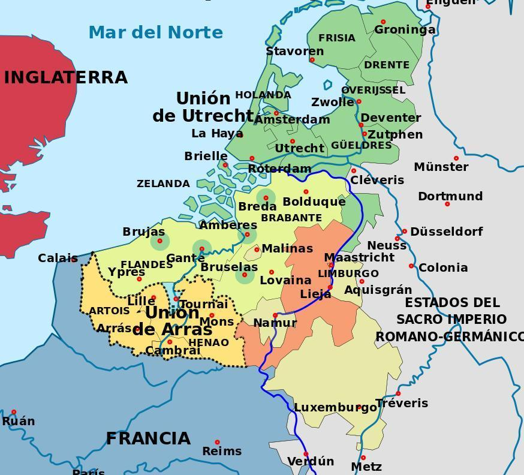
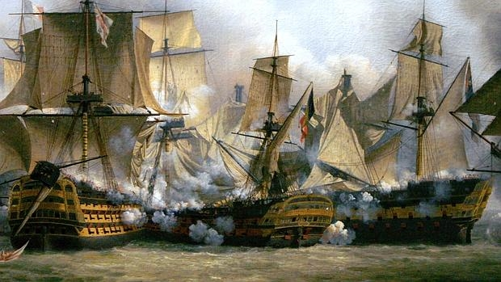

El reinado de Felipe II está marcado por las continuas guerras que sucedieron debido a la conservación de sus dominios y la defensa del catolicismo. El mantenimiento de esta política le llevará a la bancarrota y al empobrecimiento del país (abandono del campo) pero hará de España la principal potencia europea. El principal objetivo de Felipe II es intentar que el reino sea cada vez más rico.
La rebelión en los Países Bajos comenzó en 1566. Se habían ido dividiendo en el Norte calvinista y el Sur católico. El estatúder, título de gobernador militar, Guillermo de Orange huye en 1568 e inicia la resistencia, comenzando así la Guerra de los 80 años. Es considerado el padre de la patria holandesa. Felipe II envía varios gobernadores que no consiguen acabar con la rebelión. En 1581 las provincias calvinistas agrupadas en la Unión de Utrecht destituyen a Felipe II y declaran su independencia, donde Holanda es la provincia más importante. Las provincias católicas se agrupaban en la Unión de Arras. El apoyo francés e inglés a los flamencos y el desgaste económico forzarán a Felipe II a una solución. Tras su muerte Flandes pasará a su hija Isabel Clara Eugenia y a su esposo el archiduque Alberto de Austria. En 1621 Flandes retorna a la Monarquía Hispánica porque los archiduques mueren sin hijos.
La guerra se convirtió en una sangría humana y económica y en una causa del declive político y militar hispano. No finalizó hasta 1648, con el Tratado de Münster y la independencia de las 7 Provincias Unidas. Para Flandes también supuso un gran desgaste. Los saqueos, las fortificaciones y el pago de impuestos llevan a la crisis aunque sigue siendo un territorio muy rico. La católica Amberes pierde su posición de privilegio frente a la calvinista Ámsterdam.
Las relaciones entre Felipe II e Isabel fueron al principio cordiales, pero se fueron agriando. En 1587 Isabel ordenó la ejecución de María Estuardo, presa desde 1568 porque había conspirado varias veces contra ella. Estuardo era católica, reina de Escocia y reina de Francia.Tras ello, Felipe II decidió entonces la invasión de Inglaterra (1588). Se organizó una flota (Gran Armada) de 130 barcos y 20.000 hombres al mando del duque de Medina-Sidonia, sin experiencia militar ni naval.
En Flandes debía embarcar a los tercios de Alejandro Farnesio pero la flota inglesa y el mal tiempo impidieron el embarque. Al estar cerrado el canal de la Mancha se rodearon las Islas Británicas. Frente a Irlanda las tormentas destrozaron la flota y los náufragos fueron asesinados por los católicos irlandeses. Se perdió entre un tercio y la mitad de la expedición e Inglaterra no pudo ser invadida. Hasta el final del reinado de Isabel (1603) los enfrentamientos navales fueron constantes pero ni España pudo acabar con la armada inglesa ni Inglaterra pudo apoderarse de la flota de Indias. La mayor parte de las batallas fueron triunfos españoles.
Después del avance por los Balcanes, el Imperio turco se centró en el Mediterráneo. En 1570 tomaron Chipre y Túnez. Se organizó entonces una alianza cristiana liderada por el papa Pío V, la Liga Santa, formada por España, Estados Pontificios, Venecia, Génova y Malta. En 1571 la flota de la Liga Santa partió a luchar contra la otomana, comandada por don Juan de Austria. La formaban unas 200 galeras, 100 naves y 55.000 soldados. La flota turca estaba comandada por Alí Bajá, señor de Argel y estaba formada por unas 260 naves y 80.000 soldados. El combate se libró en el golfo de Lepanto, en Grecia.
La derrota turca fue absoluta y como consecuencia la flota turca se rehizo rápidamente pero no se atrevió a amenazar de nuevo a Italia y al Mediterráneo Occidental. El prestigio de Felipe II en el mundo católico fue incontestable.